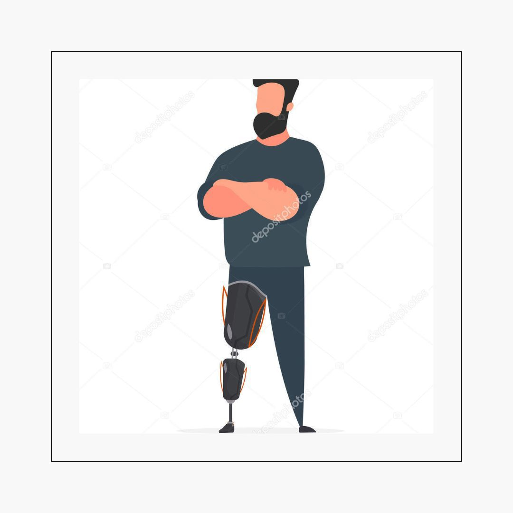
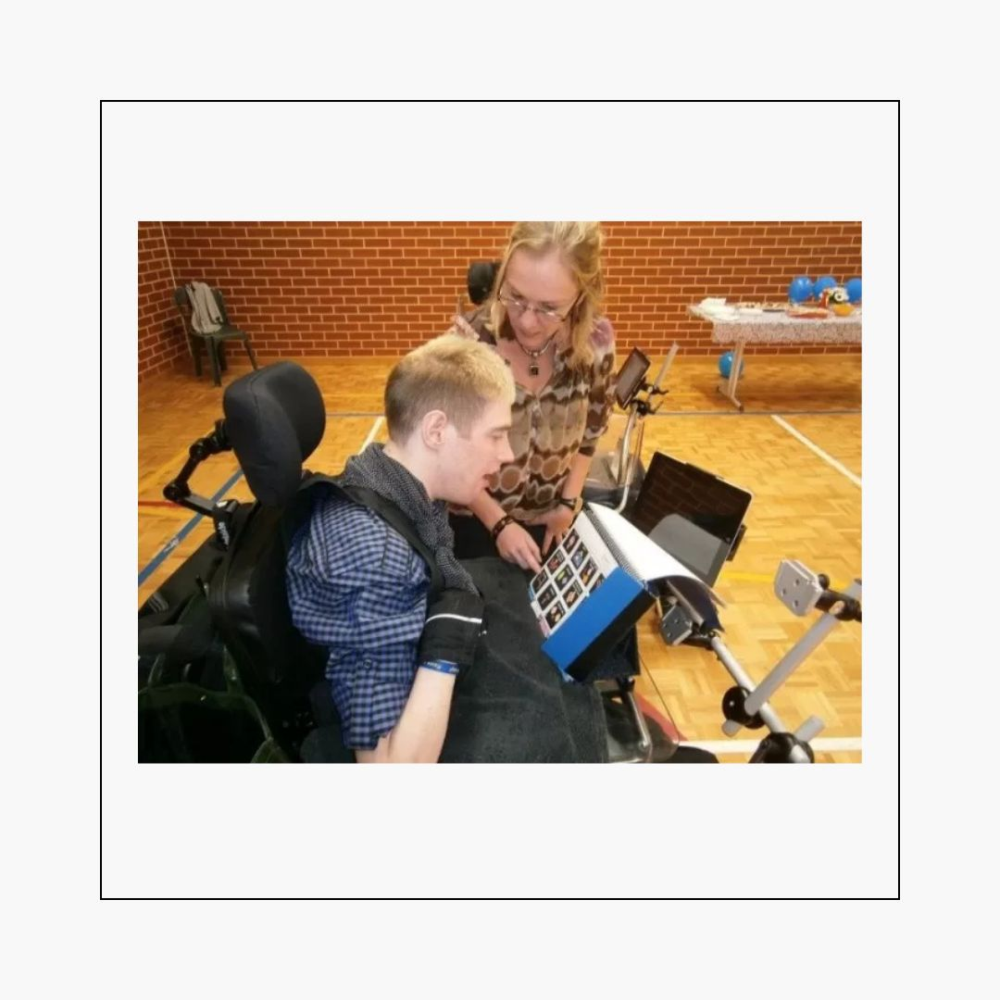

Vidas em Movimento: imersão no universo da Deficiência Física
Tipos de Deficiência Física:
- Paraplegia: Perda total das funções motoras dos membros inferiores.
- Paraparesia: Perda parcial das funções motoras dos membros inferiores.
- Monoplegia: Perda total das funções motoras de um só membro (inferior ou posterior)
- Monoparesia: Perda parcial das funções motoras de um só membro (inferior ou posterior)
- Tetraplegia: Perda total das funções motoras dos membros inferiores e superiores.
- Tetraparesia: Perda parcial das funções motoras dos membros inferiores e superiores.
- Triplegia: Perda total das funções motoras em três membros.
- Triparesia: Perda parcial das funções motoras em três membros.
- Hemiplegia: Perda total das funções motoras de um hemisfério do corpo (direito ou esquerdo)
- Hemiparesia: Perda parcial das funções motoras de um hemisfério do corpo (direito ou esquerdo)
- Amputação: Perda total ou parcial de um determinado membro ou segmento de membro.
Quais são as causas?
- Hereditária: resultante de doenças de ordem genética ou de má formação em genes do indivíduo, podendo manifestar-se antes ou logo no nascimento.
- Congênita: pode acontecer já na fase intrauterina ou ir desenvolvendo-se conforme a formação do feto. É mais comum que se manifeste antes do nascimento, mas pode também acontecer durante.
- Adquirida: esta acontece após o nascimento (nas mais diversas fases da vida do sujeito) e tem como causa traumatismos (maior número), infecções, doenças degenerativas que não haviam sido detectadas e, até mesmo, intoxicações.
Algumas tecnologias assistivas:
.jpg)
Órteses: são aparelhos de uso provisório que permitem alinhar, corrigir ou regular uma parte do corpo. Auxiliam nas funções de um membro, órgão ou tecido para evitar deformidade e compensar insuficiências funcionais que foram causadas por acidentes ou problemas de saúde. O objetivo é dar assistência mecânica ou ortopédica ao paciente

prótese ortopédica, é um aparelho que desempenha funções motoras semelhantes do membro amputado. São peças artificiais usadas como substitutas de membros, órgãos, tecidos e articulações do corpo que tiveram que ser amputadas ou não funcionam como deveriam. Por exemplo, os implantes dentários, em que o dente natural é substituído por um artificial

Comunicação alternativa e aumentativa (CAA): A CAA é um termo usado para descrever vários métodos de comunicação que podem ajudar as pessoas que são incapazes de usar o discurso verbal para se comunicar. Com o objetivo de ampliar ainda mais o repertório comunicativo que envolve habilidades de expressão e compreensão, são organizados e construídos auxílios externos como cartões de comunicação, pranchas de comunicação, pranchas alfabéticas e de palavras, vocalizadores ou o próprio computador que, por meio de software específico, pode tornar-se uma ferramenta poderosa de voz e comunicação.
Barreiras Física

Barreira é algo que nos impede, que nos bloqueia. Quando pensamos em barreiras, logo vem à cabeça um grande muro, algo intransponível e que está no ambiente. Mas existem também outros tipos de barreiras como veremos na sequência. Dentre as barreiras mais facilmente identificáveis estão as Arquitetônicas ou Físicas. Elas impactam a vida das pessoas com deficiência, mas não apenas as delas. A existência de uma grande escadaria para acessar a coordenação do curso não impede apenas o trânsito de um cadeirante, mas de uma pessoa obesa, bem como de um idoso, de uma pessoa com o pé fraturado ou de alguém que leva seu bebê no carrinho. Podemos citar, ainda, portas estreitas, rampas com inclinação exagerada, ausência de pisos podotáteis, cadeiras e mesas sem variação de altura, dentre outras. Diante disso, quais recursos tornam o espaço acessível a todos? Podemos citar alguns exemplos:
- Mobiliários adaptados a diferentes estaturas e funcionalidades
- Pisos táteis
- Rampas e elevadores
- Mapas táteis
- Indicações em Braille
- Qualidade das vias, rebaixamentos
- Transporte e sanitários acessíveis (adaptados)
Dicas de interação
Cadeira de rodas, muletas e bengalas são extensões do corpo de seus usuários. Por isso, nunca se apoie ou mova algum deles sem a permissão de quem os utiliza.
Pendure bolsas ou casacos nem apoie seus pés na cadeira de rodas, pois ela é de uso exclusivo de quem a utiliza.
Conversar com a pessoa na cadeira, procure sentar-se à mesma altura - é desconfortável conversar com alguém olhando para cima.
Segurar o braço de uma pessoa que use muletas, pois, ao invés de ajudar, você pode atrapalhá-la ou até mesmo provocar sua queda.
Conduzir uma pessoa em cadeira de rodas, pergunte antes como deve proceder. Há pessoas que se sentem mais seguras indo de frente ou de costas
Se estiver conduzindo uma pessoa na cadeira de rodas e parar para falar com alguém, procure virar a cadeira para que ela participe do diálogo. Se a conversa for longa, sendo possível, sente-se para ficar à mesma altura.